Selected work
The work behind the thinking.
Explore the organizations, business challenges, and ideas that have shaped my professional journey.
Hello, I’m
Mbili Mwanza

Get to know the person
behind the work.
I build businesses, develop systems, and share what I learn along the way.
I’m an entrepreneur, strategist, and operator working across industries — building, improving, and running businesses.
Start, improve, and operate businesses.
Connect business goals to practical decisions, clearer processes, and better ways of working.
Write about entrepreneurship, sales, marketing, operations, and lessons found in the work.
It began with Fifth Dimension Business Solutions in 2016, while I was attending medical school. A change of course in 2019 led into sales, marketing, and operational leadership.
Each chapter has shaped how I think about building and running businesses.
Today, my focus is Rubikon Ventures and its subsidiary, Nutryvyt Supplements & Nutrition.
The venture I started in 2022, and a central focus of my work today.
Supplements & Nutrition. Part of the next chapter I’m building through Rubikon Ventures.
A selection of organizations and projects from my professional journey.
Case study in preparation
Case study in preparation
Case study in preparation
Case study in preparation
Case study in preparation
Case study in preparation
Perspectives from building businesses, developing systems, and learning through the work.
Published articles will populate this section automatically in WordPress.
Original tools and selected resources for building businesses, improving systems, and sharing knowledge.
This card demonstrates the layout. Your published WordPress resources supply the real cover, description, price, and destination.
This card demonstrates the layout. Your published WordPress resources supply the real cover, description, price, and destination.
A space for future notes on business, strategy, and the work in between.
I’m open to conversations about strategic consulting, suitable projects, business partnerships, media, and speaking.
The WordPress version includes the inquiry form. This offline file is a visual preview.